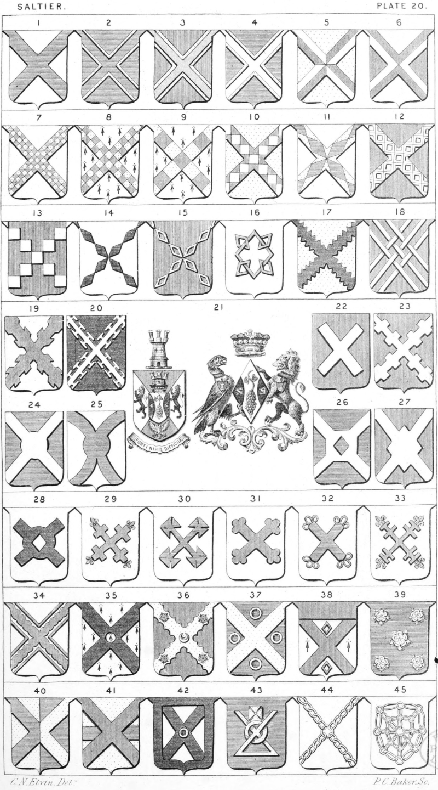

Plate 20.

Plate 20.
- Saltier. Ar. a Saltier az.
- Saltier Voided. Az. a saltier or voided
of the field
- Saltier Surmounted of another
- Saltier Fimbriated, or edged
These are distinguished by the
shading
- Saltier Quarterly Quartered
- Saltier Counterchanged. Per Saltire ar.
and gu., a Saltier counter-
changed
- Saltier Checky, or Chequy
- Saltier Compony counter-compony
- Saltier Compony
- Saltier Lozengy, or Lozengée
- Saltier Fusily
- Saltier Masculy
- Saltier of Nine Lozenges
- Saltier of Eight Fusils
- Saltier of mascles
- Ar. a mascle fretted with four
others in Saltier gu.
- Saltier Indented
- Saltier Triparted and fretted, or Three
bendlets and three bendlets-sinister interlaced
- Saltier Raguly
- Saltier Potentee, or Potented
- Arms of a Commoner and Lady.
The Armorial Bearings of
Benjamin Disraeli, and Mary
Anne Viscountess Beaconsfield.
See Arms of Commoner and
Lady
- Saltier Couped
- Saltier Bretessed
- Saltier Nowy
- Saltier Nowy arched
- Saltier Nowy quadrat pierced lozengy
- Saltier Nowy Lozengy
- Saltier Nowy couped
- Saltier Saltier, saltiered and flory. or a
Crosslet flory in Saltire
- Saltier Saltiered-pattee
- Saltier Bottonee
- Saltier Toulouse and pommettée
- Saltier Saltered and Flory
- Saltier Invecked and plain cottised
- Saltier Pierced
- Saltier Engrailed. Gu. on a Saltier
Engr. or, a crescent betw. four
roses of the field, barbed and
seeded ppr.
- Saltier Between. Az. a Saltier or, betw.
four annulets ar. Or az. a Saltier
or, cantoned with four annulets
ar.
- Saltier Cantoned. Ar. a Chief and Saltier gu., cantoned with two
Mascles in the collar and base
points az. in the flanks a spot of
ermine
- In Saltier. Az. Five Roses in
Saltier ar.
- Counterchanged. Per-pale or and
az. A Saltier counterchanged
- Surmounted, Or a fesse az. surmounted of a Saltier gu.
- On a Saltier. Ar. on a Saltier sa.
within a border of the last, a
gem-ring or. Also blazoned Ar.
on a Saltier sa. an annulet or
stone az. all within a bordure of
the second
- Az. an annulet ensigned with a cross
pattée or, interlaced with a
Saltier conjoined in base of the
second
- Saltier of Chains
- A Gordian Knot, Blazoned a double
orle of annulets, linked to each
other, and to one in the centre,
gyronwise. It is also termed
The Double Knot of Navarre,
or Navarre Knot